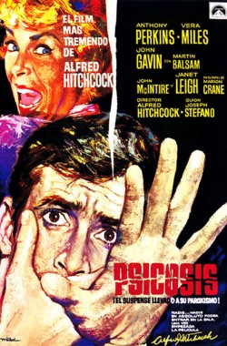
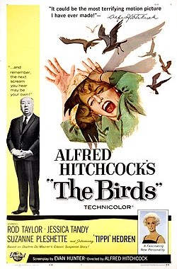
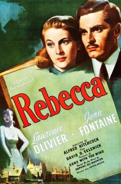

Año de estreno: 1954
Calificación: 8.2/10
Dirigida por Alfred Hitchcock
- James Stewart
- Grace Kelly
- Wendell Corey
- Thelma Ritter
- Raymond Burr
Año de estreno: 1954
Calificación: 8.2/10
Dirigida por Alfred Hitchcock
Un reportero fotográfico (Stewart) se ve obligado a permanecer en reposo con una pierna escayolada. A pesar de la compañía de su novia (Kelly) y de su enfermera (Ritter), procura escapar al tedio observando desde la ventana de su apartamento con unos prismáticos lo que ocurre en las viviendas de enfrente. Debido a una serie de extrañas circunstancias empieza a sospechar de un vecino cuya mujer ha desaparecido.
Psicosis
Birds
Rebeca
